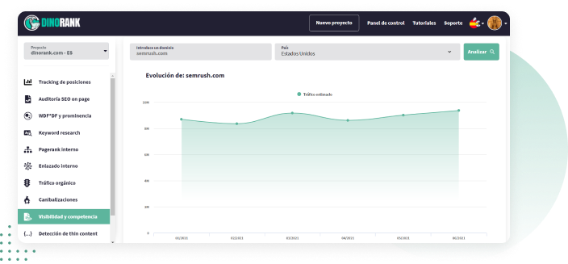
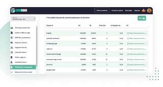

Analiza el tráfico estimado y las keywords por las que posiciona tu competencia
Conoce las tendencias, cómo ha afectado el último Google update y encuentra palabras clave de oportunidad

Si no sabes cómo de grande es tu competencia y por qué palabras clave rankea, estás ciego a nivel SEO.
Puedes intuir, pero solo con datos y estadísticas puedes hacerte un mapa de la situación real actual tanto de tu dominio o del de tu cliente, como de los dominios de la competencia. Y a partir de ahí puedes crear una estrategia solvente para trabajar en la mejora de la visibilidad de tu dominio.
La función Keyword Research te ayuda a encontrar las mejores palabras clave para llevar tráfico cualificado tu web de nicho o la web de tu cliente y mejorar su posicionamiento (y de paso sus ventas)

Esto es lo que te ofrece:
Búsqueda por país
Fácil de usar
Informes descargables
Cómo funciona la función Visibilidad y Competencia.
-
Introduces el dominio que quieras analizar y el país.
Es importante que tengas en cuenta que está función da resultados para dominios que tienen más de 5000 visitas.

-
Listado de URLs que no han recibido tráfico en ese periodo.

En este listado puedes ver las palabras clave por las que está posicionando el dominio analizado.
También te dice si su tendencia es ascendente o no.
Al conocer las keywords por las que posiciona tu competencia, puedes ver si coincides con ellos o no y generar ideas y acciones de marketing digital para tu propio dominio.
En función de si la tendencia de tus rivales es creciente o decreciente puedes determinar llevar a cabo unas acciones u otras.
Si crecen tendrás que trabajar para alcanzarlos.
Si están perdiendo fuerza tendrás una oportunidad para superarlos.
En este listado también ves la posición en las SERPS de cada palabra clave por la que posiciona la URL analizada.
Y no solo eso: te dice el tráfico estimado y también la tendencia.
Puedes descargarte todos estos datos en formato CSV y ordenar la información de forma sencilla en base a lo que más te interese.
¿Cómo podemos usar estos datos para ver lo que hace nuestra competencia?
Como en el caso anterior, lo primero aparece es el listado de keywords ordenadas por posición.
Combinando los dos informes CSV verás en qué posición están los dominios de tus competidores y la posición en la que está tu dominio o el de tu cliente.
El siguiente paso que tienes que hacer es analizar las URLs por las que ellos posicionan, ver cómo lo están haciendo y cuáles son los posibles errores que estás cometiendo.
Aquí debes tener en cuenta que a veces no es mejor rankear por keywords muy importantes, sino que consigas ser el primero para keywords con menos tráfico.
Esto es porque como ya sabes, lo más importante es que tu URL o la de tu cliente estén en las primeras posiciones. De lo contrario la posibilidad de que alguien haga click en tu dominio se reducen de forma exponencial.
Usa la función Visibilidad y Competencia para saber qué están haciendo tus rivales en los resultados de búsqueda de Google y ver cómo superarlos
Detecta oportunidades y tendencias de palabras clave.
Genera estrategias para mejorar el posicionamiento de tu dominio.
Testimonios de usuarios de DinoRANK
Opiniones de clientes que usan DinoRANK en su día a día para mejorar su visibilidad.
“Es imposible hacer SEO sin los datos que DinoRank proporciona.
Ha optimizado mucho nuestro trabajo en la agencia, tanto a la hora de hacer SEO on Page, como para ver el progreso de nuestros clientes y el rendimiento de cada recurso.
La mayor ventaja es poder ver todos los problemas de una página con un sencillo análisis.
También nos ayuda a hacer seguimiento del posicionamiento de las palabras clave y a conocer con detalle el CPC y la competencia de cada palabra clave.”

María Ponsoda
CEO Seoriginalsweb.com
“La gran virtud de Dinorank es que es una herramienta SEO muy económica pero también muy completa.
Cuando inicias un proyecto intentas contener los gastos usando mil y una herramientas gratuitas para analizar las métricas de tu web. Con Dinorank, no tengo que saltar de herramienta en herramienta.
Su Keyword research ha cambiado mi manera de afrontar la redacción de los posts. La cantidad de palabras clave derivadas y la rapidez con las que se logran, me enamoró desde el primer momento.
La funcionalidad que más me ha sorprendido es el Tracking de posiciones. Es muy útil para controlar la evolución de mis keywords y ver cómo reacciona la competencia.”

Francisco Marhuenda Sala.
Webmaster laguíadelchollo.com
“Gracias a DinoRANK, he aprendido a distribuir el PageRank y los niveles de clicks para dar fuerza a las partes que más me interesan de mi página web.
Antes no sabía lo importante que es la distribución de un buen interlinking dentro de mis proyectos.
Reviso continuamente el tracking de posiciones para ver como aumenta la visibilidad de mi web gracias al balance de mejora que he implementado con esta Suite.
He aumentado el posicionamiento de mi página web para las palabras clave más fuertes y más importantes de mis proyectos.
DinoRANK me ha ayudado de forma muy visual e intuitiva a desarrollar una mejora del SEO On Page de mi web, a enriquecer los textos gracias al estudio de la competencia y hacer una auditoría de 0 a 100 que nada tiene que envidiar a Crawlers y/o herramientas SEO de precios bastante más elevados.”

Sergio Cordero
sergiocordero.net
“Mi proyecto ha crecido en tráfico, autoridad y posicionamiento en palabras clave superimportantes para mi negocio. A pesar de haber trabajado con otras, la magia de WDF*DF y prominencia para saber, en un solo vistazo, lo que deben tener mis artículos a nivel de estructura es brutal y no necesito tener profundos conocimientos SEO.
Al principio dudé por ser menos conocida que Semrush o Ahrefs pero he conseguido rankear en los primeros lugares de Google para KW con intencionalidades de búsqueda muy competidas.
DinoRANK es intuitiva. Te dice en un solo vistazo la estructura que deberían tener tus artículos para posicionar por encima de la competencia.”

Marja Morante
Copywriter en marjamorante.com
“Tengo varios proyectos, y me ha sido muchísimo más fácil encontrar nuevas keywords para posicionar y saber por las que ya estaba posicionando.
Hago keyword research para mis proyectos y de mis clientas casi a diario. La auditoría la uso muchísimo tanto para posibles clientes, como para controlar mis proyectos.
Y la función de visibilidad es genial. Poder ver keywords de otras webs sin tener acceso a su search console.
Mi web principal está subiendo visitas y me estoy posicionando en keywords muy interesantes. He comenzado un proyecto poco y ya está consiguiendo tráfico orgánico interesante, sin haber invertido en linkbuilding, solo con optimización de contenidos.
Con DinoRANK es muy fácil hacer keyword research, la auditoría completa del sitio y la visibilidad.”

Raquel García Arévalo (Taisa)
Informática especializada en diseño web en WordPress https://www.taisa-Designer.com
“Probé Dinorank para 3 de mis páginas web, dos de ellas son nichos y una, mi proyecto principal.
No esperaba que por ese precio me diera tanto. Al principio dudé de si sería buena, pero tras probar Semrush, Ahrefs, Ubersuggest, ninguna me ha enamorado como Dinorank.
La uso a diario para hacer seguimiento de las keywords. La función de prominencia semántica ha sido un gran sorpresa, me ha permitido escalar posiciones muy rápido y me ha generado un incremento en los ingresos de la WEB.
Ver a golpe de click toda la estructura y fuerza interna de la página, poder realizar de manera sencilla una auditoría de SEO on Page o detectar canibalizaciones... me parece brutal.
Además, es la primera suite SEO todo en uno que he probado que te hace sentir en su comunidad y partícipe del proyecto, y lo valoro mucho.
Probé un mes y tengo claro que ya no me voy de Dinorank. Es una herramienta sencilla, completa, a bajo coste y que te hace llevar tu proyecto a dónde quieras, facilitándote la vida.”

Fabio Serna
https://www.opinionde.online/
“DinoRank me ha facilitado con acciones sencillas y concretas qué puedo mejorar de mi web, ahora sé que hacer para potenciar las URLs que más me interesan posicionar en mi web.
Al inicio vi una herramienta tremendamente simple y eso me hizo dudar (precio asequible y a la vez interfaz muy visual y aparentemente sencilla). Ahora veo que eso no excluye que sea tremendamente potente y útil para realizar acciones concretas y efectivas.
Me gusta mucho el Trakeo de posiciones para ver cómo influyen mis acciones, las cuales las planifico con la herramienta WDF*DF.
Gracias a la herramienta de Canibalización y las indicaciones que te da DinoRank he conseguido que Google de peso a la URL pensada para atacar determinadas KW y no perder el potencial de cada una de ellas.”

Albert Rodríguez
Socio fundador www.capelli.es
“DinoRANK me ha ahorrado mucho tiempo y he conseguido posicionar ya muchas keywords potenciales y genéricas.
Dean lleva aportando muchos años, por eso la probé y aquí sigo.
Las funciones que más uso son el tracking de posiciones y optimización de contenido en base a las recomendaciones de keywords según la competencia mejor posicionada. La auditoría que ofrece también es muy práctica.
Con DinoRANK gano tiempo y hago subir posiciones a mis clientes.”

Elena GC.
Freelance Marketing Online
Suscríbete a DinoRANK por 19.90 € al mes (precio anual), o por 25 € al mes, si prefieres suscribirte meses sueltos.